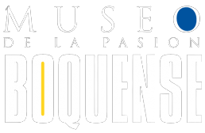

LA BOMBONERA
Estadio Alberto J.Armando
VENI A VER A BOCA LA PROXIMA FECHA, CON UNA CAPACIDAD MAXIMA DE 57.000 ESPECTADORES. Llamado oficialmente estadio Alberto J. Armando en honor a un legendario directivo del club, la Bombonera fue erigida por el mismo estudio de arquitectos e ingenieros que había diseñado el famoso mercado de Abasto porteño: Delpini-Sulcic-Bes.
LA BOMBONERA EN 360°
